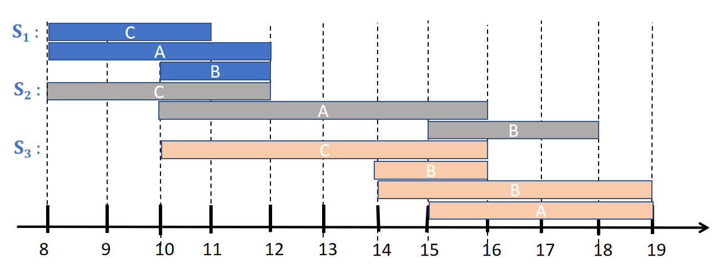
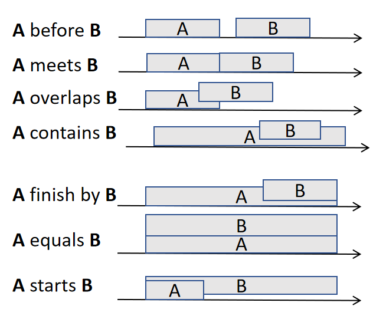

Mining Frequent Time Interval Related Patterns Using the VertTIRP Algorithm(SPMF documentation)
This example explains how to run the VertTIRP algorithm using the SPMF open-source data mining library.
How to run this example?
To run the VertTIRP algorithm:
- If you are using the graphical interface, (1) choose the "VertTIRP" algorithm, (2) select the input file "test.csv", (3) set the output file name (e.g. "output.txt") (4) set minVertSup = 50%, minHorSup = 10%, Epsilon = 1, minGap = 0, maxGap = 5, MaxPatternLength = 3, MaxDuration = 10 and DetailedOutput = false and (5) click "Run algorithm".
- If you want to execute this example from the command
line, then execute this command:
java -jar spmf.jar run VertTIRP testTIRP.txt output.txt 50% 10% 1 0 5 3 10 false
in a folder containing spmf.jar and the example input file testTIRP.txt. - If you are using the source code version of SPMF, launch the file "MainTestVertTIRP.java" in the package ca.pfv.SPMF.tests.
What is VertTIRP?
VertTIRP is an algorithm for discovering time interval related patterns in databases containing multiple event sequences, and where each event is represented by a time interval (an event has a start time and end time, and thus a duration). VertTIRP algorithm was proposed in 2021 by Mordvanyuk et al..
What is the input data of VertTIRP?
The input of VertTIRP is a time-interval sequence database.
A time-interval sequence database is a set of sequences, where each sequence contains multiple events. Each event is represented by a time interval, that is a start time and an end time. In other words, each event has a duration.
For example, here is a picture of a time interval sequence database containing three sequences, here called S1, S2 and S3:.

The first sequence (S1) indicates that an event of type C started at time 8 and ended at time 11, that an event of type A started at time 8 and ended at time 12, and an event of type B started at time 10 and ended at time 12.
The second sequence (S2) indicates that an event of type C started at time 8 and ended at time 12, that an event of type A started at time 10 and ended at time 16, and an event of type B started at time 15 and ended at time 18.
The third sequence (S3) indicates that an event of type C started at time 10 and ended at time 16, that an event of type A started at time 15 and ended at time 19, an event of type B started at time 14 and ended at time 16, and another event of type B started at time 14 and ended at time 19.
Time interval sequence databases can be used inmany applications. For example, it can be used to encode data about daily activities (A = having a meeting, B = making a phone call, C = eating).
The above example is provided in the file testTIRP.txt of the SPMF distribution. The content is as follows:
@FILETYPE="Simple time interval sequence database"
@SOURCE="SPMF SOFTWARE https://philippe-fournier-viger.com/spmf/"
8,12,1;10,12,2;8,11,3;
8,12,3;10,16,1;15,18,2;
10,16,3;14,19,2;15,19,1;14,16,2;
The first two lines of the file are optional metadata indicating the filetype and the source of the data. Then the following lines contain the interval sequences.
In this format, each event type is an integer (A = 1, B = 2, C =3).
Then, each line is a sequence. This file has three lines and thus three sequences.
In a sequence (line), each event is represented using the format X,Y,Z; where X is the start time, Y is the end time, and Z is the event type.
For instance, the first line indicates that an event of type 1 (which was called A in the above example) has started at time 8 and ended at time 12, that an event of type 2 (which was called B in the above example) started at time 10 and ended at time 12, and that an event of type 3 (called C in the above example) started at time 8 and ended at time 11. The other lines follow the same format.
What are the input parameters of VertTIRP?
The VertTIRP algorithm is designed to find patterns in such data. To apply VertTIRP, we need to set some input parameters.
Here is an intuitive explanation of these parameters:
- minVertSup = 50%, // This parameter indicates that we want to find patterns that appear in at least 50% of the sequences of the input file
- minHorSup = 10%, // This parameter indicates that we want to find patterns with a mean horizontal support of at least 10%. The mean horizontal support is the number of occurrences of the pattern in the database divided by the number of sequences where it appears.
- Epsilon = 1, // This parameter is for noise tolerance. For example, it is set to 1, it means that events may have appeared more or less 1 time unit before of after
- minGap = 0, // This parameter indicates that any events in a pattern should be separated by at least 0 time unit.
- maxGap = 5, // This parameter indicates that any event in a pattern should be separated by no more than 5 time units.
- MaxPatternLength = 3, // This parameter indicates that we do not want to find patterns containing more than 3 events. Using this parameter can greatly reduce the number of patterns that are discovered
- MaxDuration = 10 // This parameter that a pattern containing multiple events should not have a duration that is more than 10 time units
- DetailedOutput = false // This is Boolean parameter that indicates whether detailed results should be provided or not. It can be set to true or false.
What is the output of VertTIRP?
VertTIRP discovers patterns that appear frequently in a time interval sequence database.
These patterns called TIRP (time interval related patterns represents) contain 1 or more events and can reveal temporal relationships that frequently appear between events.
Generally, speaking, there are seven possible relationships between two events (the 7 core Allen relationships), which are illustrated below:

These relationships are called b (before), m (meets), o (overlap), c (contains) , f (finish by), e (equal) and s (starts).
If we set the input parameters as in the above example, the following output is produced:
@FILETYPE="Frequent time interval sequential patterns"
@SOURCE="SPMF SOFTWARE https://philippe-fournier-viger.com/spmf/"
[1] #SUP: 3 #MD: 4.666666666666667 #MHS: 1.0
[1, 2] #SUP: 2 #MD: 6.0 #MHS: 1.0
[2] #SUP: 3 #MD: 3.0 #MHS: 1.3333333333333333
[3] #SUP: 3 #MD: 4.333333333333333 #MHS: 1.0
[3, 1] #SUP: 2 #MD: 8.5 #MHS: 1.0
[3, 2] #SUP: 3 #MD: 7.25 #MHS: 1.3333333333333333
In this output, the first two lines are optional metadata. The first line indicate the type of file and the second line describes the source of the data. Then it is the pattern section and each line is a pattern. Here, the output file contains six patterns.
- The first line represents a pattern consisting of only the event type 1 (which means A in this example). This pattern has a vertical support of 3 (appears in 3 sequences), has a mean duration of 4.6 time units when it is observed, and that has a mean horizontal support of 1 (which means that the number of occurrences of that pattern divided by the number of sequences where it is observed is 3 / 3 = 1).
- The second line is a pattern consisting of the event types 1 and 2 (which means A and B in this example). This pattern indicates that A and B often together. They have a vertical suport of 2 (they appear together in 2 sequences), their occurrences together have a mean duration of 6 time unit, and the mean horizontal support of their occurrences is 1 (which means that the number of occurrences of that pattern divided by the number of sequences where it is observed is 2 / 2 = 1).
- The other lines follow the same format.
Detailed output
Now, if we want to get more details about the patterns that are discovered, we can changed the parameter detailed output of the algorithm and set it to true. Then, the result will be an output file that contains much more details about each pattern that is discovered. The output will then be as follows:
@FILETYPE="Frequent time interval sequential patterns"
@SOURCE="SPMF SOFTWARE https://philippe-fournier-viger.com/spmf/"
[1] #SUP: 3 #MD: 4.666666666666667 #MHS: 1.0
#SID: 0 #EID: 1 #START: 8 #END: 12 #SOURCEINTERVALS: [8,12] #RELATIONS: #DURATION: 4
#SID: 1 #EID: 1 #START: 10 #END: 16 #SOURCEINTERVALS: [10,16] #RELATIONS: #DURATION: 6
#SID: 2 #EID: 3 #START: 15 #END: 19 #SOURCEINTERVALS: [15,19] #RELATIONS: #DURATION: 4
[1, 2] #SUP: 2 #MD: 6.0 #MHS: 1.0
#SID: 0 #EID: 2 #START: 8 #END: 12 #SOURCEINTERVALS: [8,12][10,12] #RELATIONS: F #DURATION: 4
#SID: 1 #EID: 2 #START: 10 #END: 18 #SOURCEINTERVALS: [10,16][15,18] #RELATIONS: M #DURATION: 8
[2] #SUP: 3 #MD: 3.0 #MHS: 1.3333333333333333
#SID: 0 #EID: 2 #START: 10 #END: 12 #SOURCEINTERVALS: [10,12] #RELATIONS: #DURATION: 2
#SID: 1 #EID: 2 #START: 15 #END: 18 #SOURCEINTERVALS: [15,18] #RELATIONS: #DURATION: 3
#SID: 2 #EID: 1 #START: 14 #END: 16 #SOURCEINTERVALS: [14,16] #RELATIONS: #DURATION: 2
#SID: 2 #EID: 2 #START: 14 #END: 19 #SOURCEINTERVALS: [14,19] #RELATIONS: #DURATION: 5
[3] #SUP: 3 #MD: 4.333333333333333 #MHS: 1.0
#SID: 0 #EID: 0 #START: 8 #END: 11 #SOURCEINTERVALS: [8,11] #RELATIONS: #DURATION: 3
#SID: 1 #EID: 0 #START: 8 #END: 12 #SOURCEINTERVALS: [8,12] #RELATIONS: #DURATION: 4
#SID: 2 #EID: 0 #START: 10 #END: 16 #SOURCEINTERVALS: [10,16] #RELATIONS: #DURATION: 6
[3, 1] #SUP: 2 #MD: 8.5 #MHS: 1.0
#SID: 1 #EID: 1 #START: 8 #END: 16 #SOURCEINTERVALS: [8,12][10,16] #RELATIONS: O #DURATION: 8
#SID: 2 #EID: 3 #START: 10 #END: 19 #SOURCEINTERVALS: [10,16][15,19] #RELATIONS: M #DURATION: 9
[3, 2] #SUP: 3 #MD: 7.25 #MHS: 1.3333333333333333
#SID: 0 #EID: 2 #START: 8 #END: 12 #SOURCEINTERVALS: [8,11][10,12] #RELATIONS: F #DURATION: 4
#SID: 1 #EID: 2 #START: 8 #END: 18 #SOURCEINTERVALS: [8,12][15,18] #RELATIONS: B #DURATION: 10
#SID: 2 #EID: 1 #START: 10 #END: 16 #SOURCEINTERVALS: [10,16][14,16] #RELATIONS: F #DURATION: 6
#SID: 2 #EID: 2 #START: 10 #END: 19 #SOURCEINTERVALS: [10,16][14,19] #RELATIONS: O #DURATION: 9
In this detailed output, we have additional information about each pattern that can be interesting. Lets take the example of the first pattern, described by the first four lines:
[1] #SUP: 3 #MD: 4.666666666666667 #MHS: 1.0
#SID: 0 #EID: 1 #START: 8 #END: 12 #SOURCEINTERVALS: [8,12] #RELATIONS: #DURATION: 4
#SID: 1 #EID: 1 #START: 10 #END: 16 #SOURCEINTERVALS: [10,16] #RELATIONS: #DURATION: 6
#SID: 2 #EID: 3 #START: 15 #END: 19 #SOURCEINTERVALS: [15,19] #RELATIONS: #DURATION: 4
- The first line has the same format as previously described. It indicates that it is describing a pattern consisting of only the event type 1 (which means A in this example). This pattern has a vertical support of 3 (appears in 3 sequences), has a mean duration of 4.6 time units when it is observed, and that has a mean horizontal support of 1 (which means that the number of occurrences of that pattern divided by the number of sequences where it is observed is 3 / 3 = 1).
- The second line indicates that this pattern has an occurrence in the first sequence (#SID:0 means the first sequence) and more precisely in the second event of that sequence (#EID:1: means the second event), that the start time of that occurrence is 8 and the end time of that occurrence is 12. It also indicates that this occurrence appears in the interval [8,12] and has a duration of 4 time units (since 12 - 8 = 4).
- The third line indicates that this pattern has an occurrence in the second sequence (#SID:1 means the second sequence) and more precisely in the second event of that sequence (#EID:1: means the second event), that the start time of that occurrence is 10 and the end time of that occurrence is 16. It also indicates that this occurrence appears in the interval [10,16] and has a duration of 6 time units (since 16 - 10 = 6).
- The fourth line indicates that this pattern has an occurrence in the third sequence (#SID:2 means the third sequence) and more precisely in the fourth event of that sequence (#EID:3: means the fourth event), that the start time of that occurrence is 10 15 the end time of that occurrence is 19. It also indicates that this occurrence appears in the interval [15,19] and has a duration of 4 time units (since 19 - 15 = 4).
Now lets look at another example:
[1, 2] #SUP: 2 #MD: 6.0 #MHS: 1.0
#SID: 0 #EID: 2 #START: 8 #END: 12 #SOURCEINTERVALS: [8,12][10,12] #RELATIONS: F #DURATION: 4
#SID: 1 #EID: 2 #START: 10 #END: 18 #SOURCEINTERVALS: [10,16][15,18] #RELATIONS: M #DURATION: 8
- The first line is a pattern consisting of the event types 1 and 2 (which means A and B in this example). This line indicates that A and B often together. They have a vertical suport of 2 (they appear together in 2 sequences), their occurrences together have a mean duration of 6 time unit, and the mean horizontal support of their occurrences is 1 (which means that the number of occurrences of that pattern divided by the number of sequences where it is observed is 2 / 2 = 1).
- The second line indicates that this pattern has an occurrence in the first sequence (#SID: 0 means the first sequence) and more precisely this occurrence ends at the 3 event of that sequence (EID: 2 means the third event). Moreover, this line tells us that the start of that occurrence is time 8 and the end is at time 12, and that the intervals containing A and B are [8,12] and [10,12]. Moreover, it is said that the Allen relationship between A and B is F (finish by), and that the duration of that occurrence is 4.
- The third line indicates that this pattern has an occurrence in the second sequence (#SID: 1 means the second sequence) and more precisely this occurrence ends at the 3 event of that sequence (EID: 2 means the third event). Moreover, this line tells us that the start of that occurrence is time 10 and the end is at time 18, and that the intervals containing A and B are [10,16] and [15,18]. Moreover, it is said that the Allen relationship between A and B is M (meets), and that the duration of that occurrence is 8.
The other lines of the output file follow the same format.
Another example
Now let's see what happens if we find patterns that contain more than two events. For this, we need to run the example again, but change the parameter minVertSUP to 0.2 and use detailed output = true. Then, the output file will contain several patterns including this pattern:
[3, 2, 2] #SUP: 1 #MD: 9.0 #MHS: 1.0
#SID: 2 #EID: 2 #START: 10 #END: 19 #SOURCEINTERVALS: [10,16][14,16][14,19] #RELATIONS: F O S #DURATION: 9
The first line of this pattern indicates that this is the pattern 3, 2, 2 which means the events C, B and B in the example.
The second line indicates that this pattern appears in the third sequence (#SID: 2) and ends in the third event (#EID: 2), and that the occurrence starts at 10 and end at 19. It is also said that the intervals of C, B and B in that occurrences are [10,16][14,16] and [14,19], respectively. Moreover, it is said that the temporal relationships between C, B and B in that occurrence are F O S, which means:
- C finishes B (relationship F)
- C overlaps with B (relationship O)
- B starts with B (relationship S)
Generally, if a pattern has a set of events { e1, e2, e3... en-1, en} the relationships will be listed in this order: relationship between e1 and e2, relationship between e1 and e3, ... relationship between e1 and en-1, relationship between e1 and en, relationship between e2 and e3, ... relationship between e2 and en-1, relationship between e2 and en, ... etc.
That is the general idea about the output of VertTIRP.
Optional parameter(s)
If you are using the source code version of SPMF, you also have the option to indicate which temporal relations you want to find. By uncommenting the following lines, you can remove some relations. Then, VertTIRP will ignore them.
// algo.removeRelation(Relation.B);
// algo.removeRelation(Relation.M);
// algo.removeRelation(Relation.O);
// algo.removeRelation(Relation.F);
// algo.removeRelation(Relation.S);
// algo.removeRelation(Relation.L);
// algo.removeRelation(Relation.C);
// algo.removeRelation(Relation.E);
For example, if you uncomment the first line, then VertTIRP will ignore all the relationships of type "B" (before). This feature is interesting as you can focus on finding only some types of relationships instead of all of them, according to your needs.
Performance
VertTIRP is one of the most efficient algorithm for TIRP mining. There exists an improve version of VertTIRP also offered in SPMF, which is called FastTIRP and was shown to be faster.
Where can I get more information about VertTIRP?
The VertTIRP algorithm is described in this article:
Mordvanyuk, N., Lopez, B., Bifet, A.: VertTIRP: Robust and efficient vertical frequent time interval-related pattern mining. Expert Syst. Appl. 168, 114276 (2021)